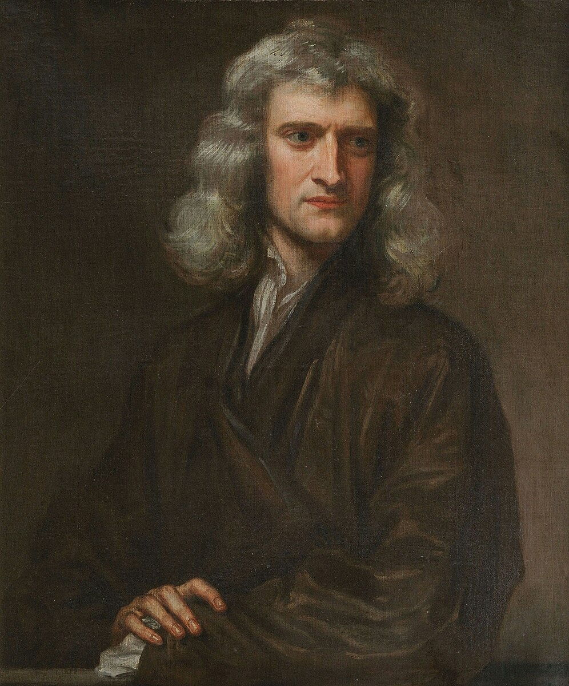

| Home | Achievements | Gallery | Contact |
His Achievements |
|||
|  | |||
Sir Isaac Newton transformed mathematics with the development of calculus, a new and powerful mathematical system that allowed scientists to precisely describe motion, change, and growth. Although similar ideas were developed independently by Gottfried Wilhelm Leibniz, Newton’s version—called fluxions—provided the foundation for solving problems involving continuously changing quantities. His work also extended to algebra and geometry, including the generalized binomial theorem, which made it possible to calculate powers of expressions that earlier mathematicians could not handle easily. These mathematical tools became essential to physics, engineering, and nearly every scientific field that followed. In physics, Newton revolutionized the study of motion through his three laws of motion, which describe how objects move and interact with forces. These laws explained everything from everyday motions to the trajectories of cannonballs and planets, making them the cornerstone of classical mechanics. Perhaps his most famous contribution was the law of universal gravitation, which stated that every object in the universe attracts every other object with a force proportional to their masses and the distance between them. This idea unified the heavens and the Earth under one set of laws, showing that the same force that pulls an apple downward also governs the orbit of the Moon and planets. Newton also made groundbreaking contributions to optics, the study of light. Through experiments with prisms, he discovered that white light is composed of different colors, each of which bends at a different angle. This insight overturned the long-held belief that white light was pure and established a new understanding of the nature of color. To improve scientific observations, he invented the Newtonian reflecting telescope, which used mirrors instead of lenses to eliminate distortions found in earlier telescopes. His discoveries in optics not only deepened scientific understanding but also shaped the development of modern astronomical instruments. |
|||